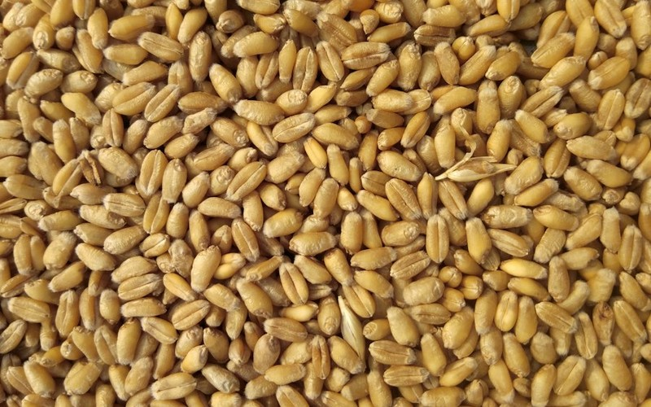
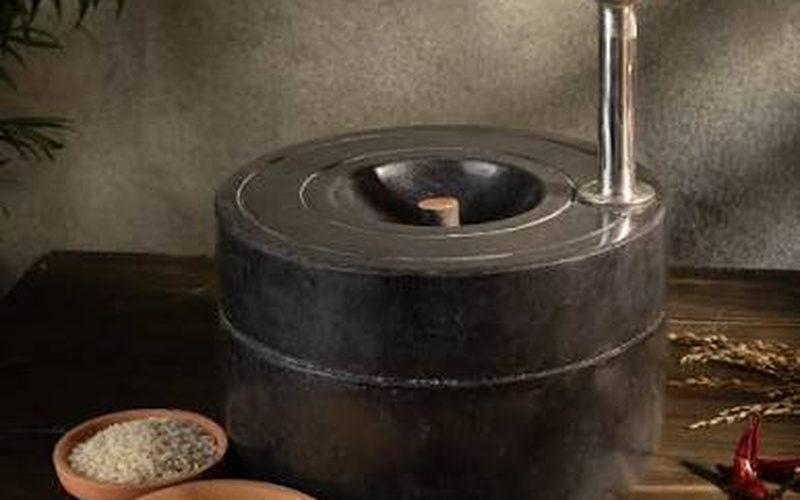
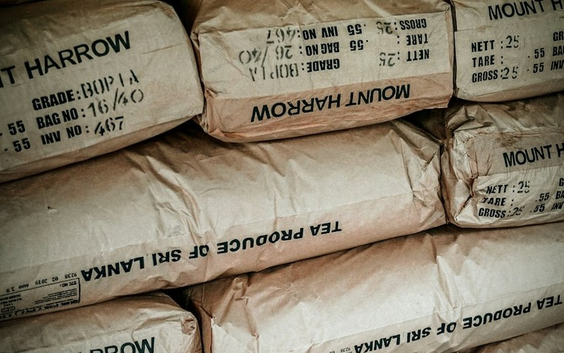
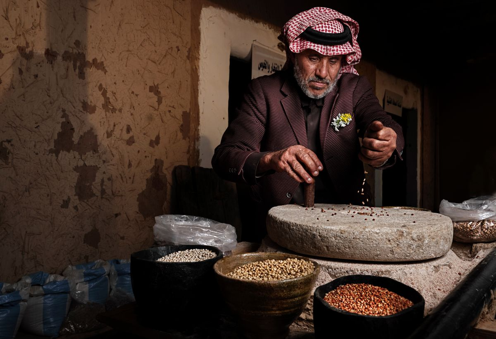

Best seller
Whole grain
Sharbati Whole Wheat Atta
Sweet, golden rotis from 100% stone-ground Madhya Pradesh whole wheat. Nothing extracted, nothing added.
$12.50 / 5 kg
Whole wheat grains are cleaned, cooled and ground slowly between granite stones in small batches, so the bran, germ and aroma stay in your flour. We pack it the same day and deliver within 24 hours.

We buy direct from twelve family farms and test every lot for moisture, protein and purity before a single grain reaches our granite chakki.
Our granite chakki turns at a gentle pace below 40 °C, preserving the grain's natural germ oils, delicate aroma and nutrition.

Grain is triple air-cleaned, mechanically sieved, and washed free of dust, chaff and micro-stones.
Cleaned wheat rests in climate silos for 24 hours to balance core moisture for a silky, uniform grind.

Hand-dressed natural granite stones crush the whole grain gently at low RPM, keeping temperatures below 40 °C.

Aero-cooled and packed into breathable multi-ply paper bags, loaded onto climate delivery vans the same afternoon.
Every batch is milled strictly below 40 °C with bran and germ intact.
Sweet, golden rotis from 100% stone-ground Madhya Pradesh whole wheat. Nothing extracted, nothing added.

Stone-ground blend of wheat, jowar, bajra, ragi, oats, barley and roasted soy for rich nutty flavour and dietary fibre.

Calcium-rich, iron-dense and naturally gluten-free. Freshly milled for crispy fermented dosas, idlis and mudde.

Cold-milled from 100% de-husked Bengal gram. Exceptionally fine, fragrant and lump-free for kadhi and pakoras.
Flour is a fresh food. We treat it that way — milled to order, never warehoused.
We mill only to that day's verified orders, packing immediately in breathable kraft sacks.
Gentle stone revolutions shield the live wheat germ oils, vitamin E and authentic aroma.
Our dedicated insulated vans deliver across Sunridge within 24 hours of grinding.

Stone, not steel Next-day delivery
Next-day delivery
Every few weeks Meera re-cuts the spiral furrows in our granite chakki stones. Here is why that slow craft decides how cool and velvety soft your flour is.
 By Meera Kapoor · Head Miller
By Meera Kapoor · Head Miller

A clear look at the anatomy of a whole wheat grain, and what each layer adds to digestion, protein absorption, and roti puffing.
 By Noa Levi · Nutrition Lead
By Noa Levi · Nutrition Lead

Harvest week on the Sehore black soil plateau with our grower partners. Moisture checks, grain testing, and why direct sourcing matters.
 By Daniel Okafor · Sourcing Lead
By Daniel Okafor · Sourcing Lead
Over 3,200 households trust our daily fresh mill. Here is what cooks across Sunridge experience.
“You can see the bran in the dough and the rotis stay soft all day. We cancelled our supermarket flour subscription within a fortnight.”
“We run a 40-seat lunch café. Fresh atta once a week changed our parathas. Harold and Daniel never miss a Tuesday morning drop.”
“The ragi and multigrain blends changed our breakfasts. Scheduling is easy and they never forget the pause when we travel.”
Still unsure about stone grind, delivery schedules or grain storage? Our team answers every question directly.
Reach Meera, Harold or Layla anytime for grain recommendations.
Ask us anythingJoin over 3,200 households getting fresh, stone-ground atta delivered weekly. Pick a plan in under two minutes.